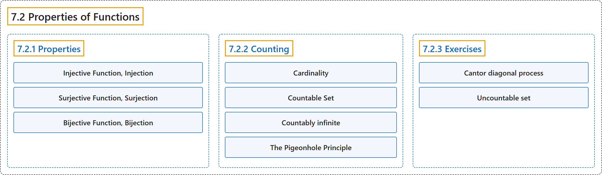

7.2 Properties of Functions
Classification

Glossary
| Term | Definition | 中文翻译 | Source |
|---|---|---|---|
| 7.2 Properties of Functions 函数的性质 |
(context) "The properties that \(f\) has, and \(g\) does not have, are the most basic properties that we look for in a function. The following definitions summarize the basic vocabulary for function properties." | （语境）“\(f\) 具有而 \(g\) 不具有的那些性质，是我们在函数中寻找的最基本的性质。下面的定义总结了函数性质的基本词汇。” | Doerr & Levasseur, n.d., subsection 7.2.1, para. 5 |
| 7.2.1 Properties 性质 |
(context) "The properties that \(f\) has, and \(g\) does not have, are the most basic properties that we look for in a function." | （语境）“\(f\) 具有而 \(g\) 不具有的那些性质，是我们在函数中寻找的最基本的性质。” | Doerr & Levasseur, n.d., subsection 7.2.1, para. 5 |
| Injective Function, Injection 单射函数、单射 |
"A function \(f: A \rightarrow B\) is injective if \(\forall a,b\in A,a\neq b\Rightarrow f(a)\neq f(b)\) An injective function is called an injection, or a one-to-one function." | 函数 \(f: A \rightarrow B\) 是单射的，若 \(\forall a,b\in A,a\neq b\Rightarrow f(a)\neq f(b)\)。单射函数称为单射，或一对一函数。 | Doerr & Levasseur, n.d., Definition 7.2.1 |
| Surjective Function, Surjection 满射函数、满射 |
"A function \(f: A \rightarrow B\) is surjective if its range, \(f(A)\text{,}\) is equal to its codomain, \(B\text{.}\) A surjective function is called a surjection, or an onto function." | 函数 \(f: A \rightarrow B\) 是满射的，若它的值域 \(f(A)\)， 等于它的陪域 \(B\)。满射函数称为满射，或映上函数。 | Doerr & Levasseur, n.d., Definition 7.2.2 |
| Bijective Function, Bijection 双射函数、双射 |
"A function \(f: A \rightarrow B\) is bijective if it is both injective and surjective. Bijective functions are also called one-to-one, onto functions." | 函数 \(f: A \rightarrow B\) 是双射的，若它既是单射又是满射。双射函数也称为一一映上函数。 | Doerr & Levasseur, n.d., Definition 7.2.3 |
| 7.2.2 Counting 计数 |
(context) "Notice in applying the definition of cardinality, we don’t actually appear to count either set, we just match up the elements. However, matching the letters in \(B\) with the numbers 1, 2, 3, and 4 is precisely how we count the letters." | （语境）“注意，在应用基数的定义时，我们看上去并没有真的去数任何一个集合，只是把元素配对。然而，把 \(B\) 中的字母与数 1、2、3、4 配对，恰恰就是我们数这些字母的方式。” | Doerr & Levasseur, n.d., subsection 7.2.2, para. 5 |
| Cardinality 基数（势） |
"Two sets are said to have the same cardinality if there exists a bijection between them. If a set has the same cardinality as the set \(\{1,2,3,\ldots , n\}\text{,}\) then we say its cardinality is \(n\text{.}\)" | 若两个集合之间存在一个双射，则称它们具有相同的基数。若一个集合与集合 \(\{1,2,3,\ldots , n\}\) 具有相同的基数，则称它的基数为 \(n\)。 | Doerr & Levasseur, n.d., Definition 7.2.7 |
| Countable Set 可数集 |
"If a set is finite or has the same cardinality as the set of positive integers, it is called a countable set." | 若一个集合是有限的，或与正整数集具有相同的基数，则称它为可数集。 | Doerr & Levasseur, n.d., Definition 7.2.8 |
| Countably infinite 可数无限 |
"A function \(f:\mathbb{P}\to A\) is a bijection if the infinite list \(f(1), f(2), f(3), \ldots\) contains no duplicates, and every element of \(A\) appears once in the list. In this case, we say the \(A\) is countably infinite, or simply countable." | 若无限列表 \(f(1), f(2), f(3), \ldots\) 没有重复项，且 \(A\) 的每个元素都在列表中出现一次，则函数 \(f:\mathbb{P}\to A\) 是一个双射。在这种情况下，我们称 \(A\) 是可数无限的，或简称可数的。 | Doerr & Levasseur, n.d., subsection 7.2.2, para. 10 |
| The Pigeonhole Principle 鸽巢原理 |
"Let \(f\) be a function from a finite set \(X\) into a finite set \(Y\text{.}\) If \(n\geq 1\) and \(\lvert X\rvert > n\lvert Y\rvert\text{,}\) then there exists an element of \(Y\) that is the image under \(f\) of at least \(n + 1\) elements of X." | 设 \(f\) 是从有限集 \(X\) 到有限集 \(Y\) 的函数。若 \(n\geq 1\) 且 \(\lvert X\rvert > n\lvert Y\rvert\)，则存在 \(Y\) 的一个元素，它是 \(X\) 中至少 \(n + 1\) 个元素在 \(f\) 下的像。 | Doerr & Levasseur, n.d., Theorem 7.2.13 |
| 7.2.3 Exercises 练习 |
(No definition) | （无定义） | Doerr & Levasseur, n.d., subsection 7.2.3 |
| Cantor diagonal process 康托尔对角线法 |
(context) "Prove that the set of all infinite sequences of 0’s and 1’s is not a countable set. Answer. The proof is indirect and follows a technique called the Cantor diagonal process." | （语境）证明所有由 0 和 1 组成的无限序列的集合不是可数集。答案：证明是间接的，采用一种称为康托尔对角线法的技巧。 | Doerr & Levasseur, n.d., Exercise 7.2.13 |
| Uncountable set 不可数集 |
"The phrase 'uncountably infinite' describes an infinite set, such as the real numbers, which is not countably infinite." | “不可数无限”一词描述的是一个无限集合（例如实数集），它不是可数无限的。 | Weisstein, n.d.-i, "Uncountably infinite" entry, para. 1 |
References
Doerr, A., & Levasseur, K. (n.d.). Applied discrete structures. Retrieved October 28, 2026, from https://discretemath.org/ads/index-ads.html
Weisstein, E. W. (n.d.-i). Uncountably infinite. MathWorld: A Wolfram Resource. Retrieved October 27, 2026, from https://mathworld.wolfram.com/UncountablyInfinite.html